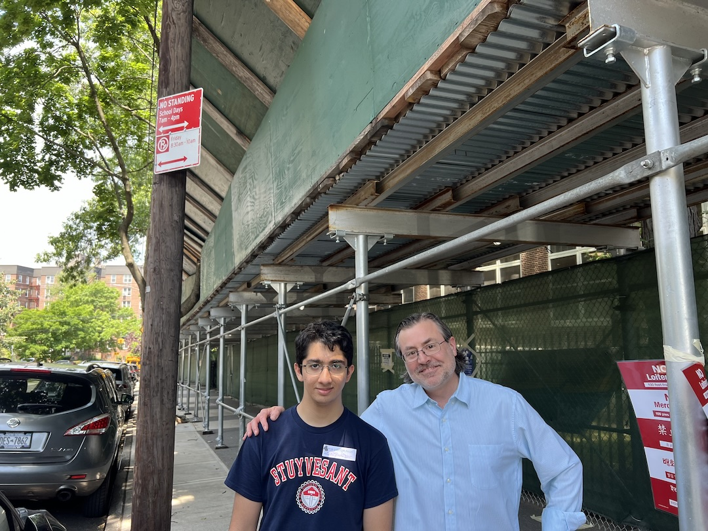

I’m a student at Carnegie Mellon University pursuing a B.S. in Information Systems with an additional major in Computer Science, and a 2026 graduate of Stuyvesant High School. I’m interested in artificial intelligence, robotics, and software systems with real-world impact.
My work spans medical AI research, autonomous robotics, full-stack web development, and STEM education. I have built a multi-model deep learning ensemble for chest X-ray pathology classification, a custom Java motion-control library for FTC robotics, and web platforms used by hundreds of students.
Programming experience: Python, Java, C++, JavaScript, SQL, Swift, Bash, PyTorch, TensorFlow, NumPy, pandas, Databricks, React, Svelte, Flask, and Node.js.
SAT Score
Years Programming
Students Reached
Tutees Supported
My research focuses on medical AI and computer vision, with hands-on work in deep learning systems for chest X-ray analysis and prior engineering-focused research in robotics and materials reuse.
June 2025 - Present
Division of Health Artificial Intelligence — Mentors: Dr. Theo Zanos and Dr. Nabil Ettehadi
Project: Multi-model deep learning ensemble for 14-label thoracic pathology classification on NIH ChestX-ray14
Summer 2024
Project: Worked with a student team on a project to repurpose scrap polycarbonate plastic through 3D printing. (Mentor: Dr. Edward Segal)
PyTorch, TensorFlow, NumPy, pandas, scikit-learn, XGBoost, Flask
FTC robotics, motion control, localization, and autonomous algorithms
React, Svelte, Node.js, modern frontend workflows
iOS frontend development and app architecture
Systems-focused programming and performance-minded implementation
SQL, Databricks, Bash, Git, Linux
Captain & Lead Programmer for FTC Team #8721 Mighty Mechanics (2023 - 2026).
Led development of Mighty Motion, a custom Java motion-control library with localization, motion profiling, holonomic pure pursuit, PID pose control, and inverse kinematics. Built a Kalman-filtered odometry + AprilTag localizer and AutoAim, a turret angle solver and distance-to-RPM regression that reduced manual alignment to one action.
NYC Champion and FTC Control Award winner (2026); World Championship qualifier (2024, 2026).
Vice President of Web, elected (2025 - 2026); Web Committee Member (2024).
Led a 15-person web team maintaining stuyarista.org and its backend for 200+ members and 1,000+ tutees. Wrote credit rollover verification scripts that automate membership requirement tracking, and rebuilt the interactive club fair map.
Program Lead & Instructor (2022 - 2026).
Led a four-year STEM outreach program at a NYC public elementary school, building the lesson plans and running hands-on coding and robotics sessions for 250 students.
Co-Founder & CTO (September 2024 - October 2025).
Built AI-powered adaptive learning tools; key infrastructure developed with React.
Led a 15-member web team maintaining stuyarista.org for 200+ members and coordinated policy changes through executive council work.
Ran coding, math, and robotics sessions for 2nd, 3rd, and 4th graders from 2022 to 2026, building the lesson plans for the program.
Tutored fellow students in computer science.
Volunteered with MoMath in New York City.
Presented robotics concepts in simple terms to 250+ elementary school students.
Partnered with faculty and administrators to promote STEM opportunities for underprivileged students.

Teaching 3rd graders robotics concepts with our FTC competition robot.

Teaching 4th graders coding and algorithm fundamentals.

Me and the principal of PS117.

Hands-on robotics workshop for 4th grade students.

Teaching basic Java.

Induction ceremony as an ARISTA VP.
Expected Graduation: May 2030
B.S. Information Systems, Computer Science (additional major)
Coursework: Principles of Imperative Computation (15-122), Concepts of Mathematics (21-127), Reasoning with Data (36-200)
Graduated: June 2026
New York, NY | GPA: 4.0 | SAT: 1570 (800 Math, 770 Reading & Writing)
AP Scholar with Distinction | National Merit Commended Student | College Board National Recognition Program
AP: Biology, World History, Environmental Science, US History, Computer Science, Pre-Calculus, Calculus BC, Macroeconomics, Microeconomics
Honors: Chemistry, Physics | Advanced Electives: Software Development, Systems Programming, Oceanography
11th and 12th Grade
Coursework: Introduction to Algorithms, Introduction to Quantitative Biotechnology, Classical and Quantum Computing, Python Data Structures
Summer 2024
Competitive Programming & Machine Learning

Presenting my final project for SHAPE
My journey in FIRST began in FLL and evolved into FTC through the Forest Hills Robotics League. I have stayed in the FIRST community for years, growing from student programmer to team captain.
From 2023 to 2026, I was captain and lead programmer of team #8721 Mighty Mechanics, a community-based FTC team that represents NYC in high-level competition and outreach.
We qualified for the FTC World Championship in Houston in 2024 and 2026, were NYC Finalists in 2025, and won the NYC Championship and the FTC Control Award in 2026. In 2025, I was recognized as a FIRST Dean's List Semi-Finalist (NYC).
As lead programmer, I led development of Mighty Motion, a custom Java motion-control library that replaced open-source alternatives, with our own localization, motion profiling, holonomic pure pursuit, PID pose control, and inverse kinematics.

The Mighty Mechanics and our robot at the 2024 FTC World Championships.

Working on our robot's robotic arm.